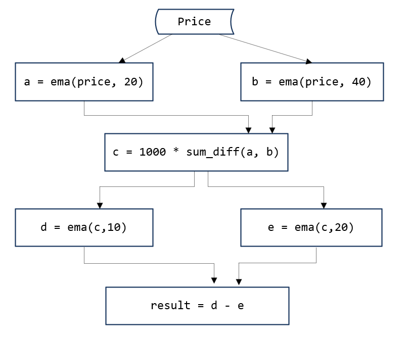

响应式状态引擎
量化金融的研究和实盘中，越来越多的机构需要根据高频的行情数据（L1/L2以及逐笔委托数据）来计算量价因子，每只股票的每一条新数据的注入都会更新该只股票的所有因子值。这些因子通常是有状态的：不仅与当前的多个指标有关，而且与多个指标的历史状态相关。以国内的股票市场为例，每3秒收到一个快照，每个股票每天4800个快照，计算因子时可能会用到之前若干个快照的数据，甚至之前若干天的数据。绝大多数机构的研发环境系统（例如Python）与生产环境系统（例如C++）不同，要维护两套代码，是非常沉重的负担。
本教程介绍如何使用DolphinDB 1.30.3版本发布的响应式状态引擎（Reactive State Engine），实现流批统一计算带有状态的高频因子。状态引擎接受在历史数据批量处理（研发阶段）中编写的表达式或函数作为输入进行流式计算，并确保流式计算的结果与批量计算完全一致。只要在历史数据的批量计算中验证正确，即可保证流数据的实时计算正确。这避免了在生产环境中重写研发代码的高额成本，以及维护研发和生产两套代码的负担。
1. 金融高频因子计算示例
本节通过一个金融高频因子计算的示例，介绍高频因子计算中的挑战。以下的因子表达式以DolphinDB脚本语言编写，使用了用户自定义函数sum\_diff和内置函数ema (exponential moving average)。sum_diff是一个无状态函数，ema是一个有状态的函数，依赖历史数据。更为棘手的是，如以下计算分解图所示，需要使用ema函数的多重嵌套。
def sum_diff(x, y){
return (x-y)/(x+y)
}
ema(1000 * sum_diff(ema(price, 20), ema(price, 40)),10) - ema(1000 * sum_diff(ema(price, 20), ema(price, 40)), 20)
面对此类场景，我们需要解决以下几个问题：
- 投研阶段能否使用历史数据快速为每只股票计算100~1000个类似的因子？
- 实盘阶段能否在每个行情tick数据到来时为每只股票计算100~1000个类似的因子？
- 批处理和流计算的代码实现是否高效？批和流能否统一代码？正确性校验是否便捷？
2. 现有解决方案的优缺点
Python pandas/numpy目前是研究阶段最常用的高频因子解决方案。pandas对历史面板数据处理有非常成熟的解决方案，而且内置了大部分高频因子计算需要用到的算子，可快速开发高频因子。但pandas无论对历史数据计算，还是对实时数据计算的性能都较差。对历史数据计算时，单线程的计算性能也存在较大提升空间，此外，由于python的Global interpreter lock的限制，无法进行并行计算；对实时数据进行计算时，由于python仅支持全量计算，不支持增量计算，所以无法达到实时计算的性能要求。
为生产环境中的性能考虑，很多机构会用C++重新实现研究（历史数据）代码。不过，这种方法需要维护两套代码，开发成本（时间和人力）会大幅增加。此外，还要耗费大量精力确保两套系统的结果完全一致。
Flink是一种批流统一的解决方案。Flink支持SQL和窗口函数，高频因子用到的基本算子在Flink中已经内置实现。因此，简单的因子用Flink实现比较高效，运行性能也较好。但Flink最大的问题是无法实现复杂的高频因子计算。如前一章中提到的例子，需要多个窗口函数的嵌套，无法直接用Flink实现。这也正是DolphinDB开发响应式状态引擎的动机所在。
3. 响应式状态引擎（Reactive State Engine)
响应式状态引擎实际上是一个计算黑盒，输入在历史数据上已经验证的DolphinDB因子代码（表达式或函数）以及实时行情数据，输出实时因子值。由于在静态的历史数据集上开发和验证高频因子远比在流数据上开发更为简单，响应式状态引擎显著降低了流式高频因子的开发成本和难度。
def sum_diff(x, y){
return (x-y)/(x+y)
}
factor1 = <ema(1000 * sum_diff(ema(price, 20), ema(price, 40)),10) - ema(1000 * sum_diff(ema(price, 20), ema(price, 40)), 20)>
share streamTable(1:0, `sym`price, [STRING,DOUBLE]) as tickStream
result = table(1000:0, `sym`factor1, [STRING,DOUBLE])
rse = createReactiveStateEngine(name="reactiveDemo", metrics=factor1, dummyTable=tickStream, outputTable=result, keyColumn="sym")
subscribeTable(tableName=`tickStream, actionName="factors", handler=tableInsert{rse})以上代码在DolphinDB中实现前述因子的流式计算。factor1是前述因子在历史数据上的实现，不做任何改变，直接传递给响应式状态引擎rse，即可实现流式计算。通过订阅函数subscribeTable，将流数据表tickStream与状态引擎rse进行关联。每一批次实时数据的注入，都会触发状态引擎的计算，并输出因子值到结果表result。以下代码产生随机数据，并注入到流数据表。结果与通过SQL语句计算的结果完全相同。
data = table(take("A", 100) as sym, rand(10.0, 100) as price)
tickStream.append!(data)
factor1Hist = select sym, ema(1000 * sum_diff(ema(price, 20), ema(price, 40)),10) - ema(1000 * sum_diff(ema(price, 20), ema(price, 40)), 20) as factor1 from data context by sym
assert each(eqObj, result.values(), factor1Hist.values())3.1. 工作原理
如图1所示，一个有状态的高频因子计算过程可以分解成有一个有向无环图（DAG）。图中的节点有3种：（1）数据源，如price（2）有状态的算子，如a, b, d, e （3）无状态的算子，如c和result。从数据源节点开始，按照既定的路径，层层推进，得到最后的因子输出。这非常类似excel中的单元格链式计算。当一个单元格的数据发生变化时，相关联的单元格依次发生变化。响应式状态引擎的名称也是从这一点引申出来的。
无状态的算子比较简单，使用DolphinDB已有的脚本引擎，就可以表示和计算。因此，问题转化为两点：（1）如何解析得到一个优化的DAG，（2）如何优化每个有状态的算子的计算。
3.2. 解析和优化
DolphinDB的脚本语言是支持向量化和函数化的多范式编程语言。通过函数的调用关系，不难得到计算步骤的DAG。在解析的时候，因为输入消息的schema是已知的，我们可以快速推断出每一个节点的输入数据类型和输出数据类型。输入参数类型确定，函数名称确定，每个状态算子的具体实例就可以创建出来。
每一个算子（有状态和无状态）在DolphinDB中都可以转化为一个唯一的字符串序列。据此，我们可以删除重复的算子，提高计算效率。
3.3. 内置的状态函数
状态算子计算时需要用到历史状态。如果每一次计算都使用全量数据，性能不佳。状态函数的优化，也就是增量方式的流式实现非常关键。下列状态函数在 DolphinDB 的响应式状态引擎中的实现均得到了优化。目前，状态引擎不允许使用未经优化的状态函数，且需避免使用聚合函数。
- 累计窗口函数：cumavg, cumsum, cumprod, cumcount, cummin, cummax, cumvar, cumvarp, cumstd, cumstdp, cumcorr, cumcovar, cumbeta, cumwsum, cumwavg, cumfirstNot, cumlastNot, cummed, cumpercentile, cumPositiveStreak
- 滑动窗口函数：ema, mavg, msum, mcount, mprod, mvar, mvarp, mstd, mstdp, mskew, mkurtosis, mmin, mmax, mimin, mimax, mmed, mpercentile, mrank, mcorr, mcovar, mbeta, mwsum, mwavg, mmad, mfirst, mlast, mmaxPositiveStreak, mslr, tmove, tmfirst, tmlast, tmsum, tmavg, tmcount, tmvar, tmvarp, tmstd, tmstdp, tmprod, tmskew, tmkurtosis, tmmin, tmmax, tmmed, tmpercentile, tmrank, tmcovar, tmbeta, tmcorr, tmwavg, tmwsum, tmoving, moving, sma,wma, dema, tema, trima, linearTimeTrend, talib, t3, ma, mmaxPostiveStreak
- 序列相关函数：deltas, ratios, ffill, move, prev, iterate, ewmMean, ewmVar, ewmStd, ewmCov, ewmCorr, prevState
- topN相关函数：msumTopN, mavgTopN, mstdpTopN, mstdTopN, mvarpTopN, mvarTopN, mcorrTopN, mbetaTopN, mcovarTopN, mwsumTopN
- 高阶函数：segmentby(参数 func 暂支持 cumsum, cummax, cummin, cumcount, cumavg, cumstd, cumvar, cumstdp, cumvarp)
- 其他函数：talibNull, dynamicGroupCumsum, dynamicGroupCumcount, topRange, lowRange, trueRange
注意，talib 作为状态函数时，第一个参数 func 只能是响应式状态引擎支持的状态函数。在后续的版本中，DolphinDB将允许用户用插件来开发自己的状态函数，注册后即可在状态引擎中使用。
3.4. 自定义状态函数
响应式状态引擎中可使用自定义状态函数。需要注意以下几点：
- 函数定义前，使用 @state 表示函数是自定义的状态函数。
- 自定义状态函数中只能使用赋值语句和return语句。return语句必须是最后一个语句，可返回多个值。
- 使用iif函数表示if...else的逻辑。
如果仅允许使用一个表达式来表示一个因子，会带来很多局限性。首先，在某些情况下，仅使用表达式，无法实现一个完整的因子。下面的例子返回线性回归的alpha，beta和residual。
@state
def slr(y, x){
alpha, beta = mslr(y, x, 12)
residual = mavg(y, 12) - beta * mavg(x, 12) - alpha
return alpha, beta, residual
}其次，很多因子可能会使用共同的中间结果，定义多个因子时，代码会更简洁。自定义函数可以同时返回多个结果。下面的函数multiFactors定义了5个因子。
@state
def multiFactors(lowPrice, highPrice, volumeTrade, closePrice, buy_active, sell_active, tradePrice, askPrice1, bidPrice1, askPrice10, agg_vol, agg_amt){
a = ema(askPrice10, 30)
term0 = ema((lowPrice - a) / (ema(highPrice, 30) - a), 50)
term1 = mrank((highPrice - a) / (ema(highPrice, 5) - a), true, 15)
term2 = mcorr(askPrice10, volumeTrade, 10) * mrank(mstd(closePrice, 20, 20), true, 10)
buy_vol_ma = mavg(buy_active, 6)
sell_vol_ma = mavg(sell_active, 6)
zero_free_vol = iif(agg_vol==0, 1, agg_vol)
stl_prc = ffill(agg_amt \ zero_free_vol \ 20).nullFill(tradePrice)
buy_prop = stl_prc
spd = askPrice1 - bidPrice1
spd_ma = round(mavg(iif(spd < 0, 0, spd), 6), 5)
term3 = buy_prop * spd_ma
term4 = iif(spd_ma == 0, 0, buy_prop / spd_ma)
return term0, term1, term2, term3, term4
}最后，某些表达式冗长，缺乏可读性。第一节中的因子表达式改为下面的自定义状态函数factor1后，计算逻辑简洁明了。
@state
def factor1(price) {
a = ema(price, 20)
b = ema(price, 40)
c = 1000 * sum_diff(a, b)
return ema(c, 10) - ema(c, 20)
}3.5. 输出结果过滤
状态引擎会对输入的每一条消息做出计算响应，产生一条记录作为结果，计算的结果在默认情况下都会输出到结果表，也就是说输入n个消息，输出n条记录。如果希望仅输出一部分结果，可以启用过滤条件，只有满足条件的结果才会输出。
下面的例子检查股票价格是否有变化，只有价格变化的记录才会输出。
share streamTable(1:0, `sym`price, [STRING,DOUBLE]) as tickStream
result = table(1000:0, `sym`price, [STRING,DOUBLE])
rse = createReactiveStateEngine(name="reactiveFilter", metrics =[<price>], dummyTable=tickStream, outputTable=result, keyColumn="sym", filter=<prev(price) != price>)
subscribeTable(tableName=`tickStream, actionName="filter", handler=tableInsert{rse})3.6. 快照机制
为了满足生产环境业务持续性的需要，DolphinDB内置的流式计算引擎包括响应式状态引擎均支持快照（snapshot）输出。
响应式状态引擎的快照包括已处理的最后一条消息的ID以及引擎当前的状态（中间计算结果）。当系统出现异常，重新初始化状态引擎时，可恢复到最后一个快照的状态，并且从已处理的消息的下一条开始订阅。
def sum_diff(x, y){
return (x-y)/(x+y)
}
factor1 = <ema(1000 * sum_diff(ema(price, 20), ema(price, 40)),10) - ema(1000 * sum_diff(ema(price, 20), ema(price, 40)), 20)>
share streamTable(1:0, `sym`price, [STRING,DOUBLE]) as tickStream
result = table(1000:0, `sym`factor1, [STRING,DOUBLE])
rse = createReactiveStateEngine(name="reactiveDemo", metrics =factor1, dummyTable=tickStream, outputTable=result, keyColumn="sym", snapshotDir= "/home/data/snapshot", snapshotIntervalInMsgCount=400000)
msgId = getSnapshotMsgId(rse)
if(msgId >= 0) msgId += 1
subscribeTable(tableName=`tickStream, actionName="factors", offset=msgId, handler=appendMsg{rse}, handlerNeedMsgId=true)响应式状态引擎要启用快照机制，创建时需要指定两个额外的参数snapshotDir和snapshotIntervalInMsgCount。snapshotDir用于指定存储快照的目录。snapshotIntervalInMsgCount指定处理多少条消息后产生一个快照。引擎初始化时，系统会检查快照目录下是否存在一个以引擎名称命名，后缀为snapshot的文件。以上面的代码为例，如果存在文件/home/data/snapshot/reactiveDemo.snapshot，加载这个快照。函数getSnapshotMsgId可以获取最近一个快照对应的msgId。如果不存在快照，返回-1。
状态引擎要启用快照机制，调用subscribeTable函数也需相应的修改：
- 首先必须指定消息的offset。
- 其次，handler必须使用appendMsg函数。appendMsg函数接受两个参数，msgBody和msgId。
- 再次，参数handlerNeedMsgId必须指定为true。
3.7. 并行处理
当需要处理大量消息时，可在DolphinDB消息订阅函数subscribeTable中指定可选参数filter与hash，让多个订阅客户端并行处理消息。
- 参数filter用于指定消息过滤逻辑。目前支持三种过滤方式，分别为值过滤，范围过滤和哈希过滤。
- 参数hash可以指定一个哈希值，确定这个订阅由哪个线程来执行。例如，配置参数subExecutors为4，用户指定了哈希值5，那么该订阅的计算任务将由第二个线程来执行。
下面是响应式状态引擎并行计算因子的例子。假设配置参数subExecutors=4，创建4个状态引擎，每个状态引擎根据流表的股票代码的哈希值来订阅不同股票的数据，并且指定不同的订阅线程来处理，最终将结果输出到同一个输出表中。
def sum_diff(x, y){
return (x-y)/(x+y)
}
factor1 = <ema(1000 * sum_diff(ema(price, 20), ema(price, 40)),10) - ema(1000 * sum_diff(ema(price, 20), ema(price, 40)), 20)>
share streamTable(1:0, `sym`price, [STRING,DOUBLE]) as tickStream
setStreamTableFilterColumn(tickStream, `sym)
share streamTable(1000:0, `sym`factor1, [STRING,DOUBLE]) as resultStream
for(i in 0..3){
rse = createReactiveStateEngine(name="reactiveDemo"+string(i), metrics =factor1, dummyTable=tickStream, outputTable=resultStream, keyColumn="sym")
subscribeTable(tableName=`tickStream, actionName="sub"+string(i), handler=tableInsert{rse}, msgAsTable = true, hash = i, filter = (4,i))
}
n=2000000
tmp = table(take("A"+string(1..4000), n) as sym, rand(10.0, n) as price)
tickStream.append!(tmp)需要注意的是，如果多个状态引擎是同一个输出表，该输出表必须是一个共享表。没有共享的表不是线程安全的，并行写入可能会导致系统崩溃。
4. 流批统一解决方案
金融高频因子的流批统一处理在DolphinDB中有两种实现方法。
第一种方法，使用函数或表达式实现金融高频因子，代入不同的计算引擎进行历史数据或流数据的计算。代入SQL引擎，可以实现对历史数据的计算；代入响应式状态引擎，可以实现对流数据的计算。这在第3章的序言部分已经举例说明。在这种模式下用DolphinDB脚本语言表示的表达式或函数实际上是对因子语义的一种描述，而不是具体的实现。因子计算的具体实现交由相应的计算引擎来完成，从而实现不同场景下的最佳性能。
第二种方法，历史数据通过回放，转变成流数据，然后使用流数据计算引擎来完成计算。我们仍然以教程开始部分的因子为例，唯一的区别是流数据表tickStream的数据源来自于历史数据库的replay。使用这种方法计算历史数据的因子值，效率不高是一个缺点。
def sum_diff(x, y){
return (x-y)/(x+y)
}
factor1 = <ema(1000 * sum_diff(ema(price, 20), ema(price, 40)),10) - ema(1000 * sum_diff(ema(price, 20), ema(price, 40)), 20)>
share streamTable(1:0, `sym`date`time`price, [STRING,DATE,TIME,DOUBLE]) as tickStream
result = table(1000:0, `sym`factor1, [STRING,DOUBLE])
rse = createReactiveStateEngine(name="reactiveDemo", metrics =factor1, dummyTable=tickStream, outputTable=result, keyColumn="sym")
subscribeTable(tableName=`tickStream, actionName="factors", handler=tableInsert{rse})
//从历史数据库dfs://TAQ的trades表中加载一天的数据，回放到流数据表tickStream中
inputDS = replayDS(<select sym, date, time, price from loadTable("dfs://TAQ", "trades") where date=2021.03.08>, `date, `time, 08:00:00.000 + (1..10) * 3600000)
replay(inputDS, tickStream, `date, `time, 1000, true, 2)5. 性能测试
我们测试了响应式状态引擎计算因子的性能。测试使用模拟数据，并使用warmupStreamEngine函数模拟状态引擎已经处理部分数据的情况。测试共包括20个不同复杂度度的因子，其中两个自定义状态函数分别返回3个和5个因子。为方便测试，计算仅使用单线程处理。
@state
def slr(y, x){
alpha, beta = mslr(y, x, 12)
residual = mavg(y, 12) - beta * mavg(x, 12) - alpha
return alpha, beta, residual
}
@state
def multiFactors(lowPrice, highPrice, volumeTrade, closePrice, buy_active, sell_active, tradePrice, askPrice1, bidPrice1, askPrice10, agg_vol, agg_amt){
a = ema(askPrice10, 30)
term0 = ema((lowPrice - a) / (ema(highPrice, 30) - a), 50)
term1 = mrank((highPrice - a) / (ema(highPrice, 5) - a), true, 15)
term2 = mcorr(askPrice10, volumeTrade, 10) * mrank(mstd(closePrice, 20, 20), true, 10)
buy_vol_ma = mavg(buy_active, 6)
sell_vol_ma = mavg(sell_active, 6)
zero_free_vol = iif(agg_vol==0, 1, agg_vol)
stl_prc = ffill(agg_amt \ zero_free_vol \ 20).nullFill(tradePrice)
buy_prop = stl_prc
spd = askPrice1 - bidPrice1
spd_ma = round(mavg(iif(spd < 0, 0, spd), 6), 5)
term3 = buy_prop * spd_ma
term4 = iif(spd_ma == 0, 0, buy_prop / spd_ma)
return term0, term1, term2, term3, term4
}
metrics = array(ANY, 14)
metrics[0] = <ema(1000 * sum_diff(ema(close, 20), ema(close, 40)),10) - ema(1000 * sum_diff(ema(close, 20), ema(close, 40)), 20)>
metrics[1] = <mslr(high, volume, 8)[1]>
metrics[2] = <mcorr(low, high, 11)>
metrics[3] = <mstdp(low, 15)>
metrics[4] = <mbeta(high, value, 63)>
metrics[5] = <mcovar(low, value, 71)>
metrics[6] = <(close/mavg(close, 1..6)-1)*100>
metrics[7] = <mmin(high, 15)>
metrics[8] = <mavg(((high+low)/2+(mavg(high, 2)+mavg(low, 2))/2)*(high-low)/volume, 7, 2)>
metrics[9] = <mslr(mavg(close, 14), volume, 63)[1]>
metrics[10] = <mcorr(mavg(open, 25), volume, 71)>
metrics[11] = <mbeta(high, mstdp(close, 8), 77)>
metrics[12] = <slr(close, volume)>
metrics[13] = <multiFactors(low, high, volume, close, numTrade, numTrade, close, value, close, open, volume, numTrade)>
dummy = streamTable(10000:0, `symbol`market`date`time`quote_type`preclose`open`high`low`close`numTrade`volume`value`position`recvtime,[SYMBOL,SHORT,DATE,TIME,SHORT,DOUBLE,DOUBLE,DOUBLE,DOUBLE,DOUBLE,DOUBLE,LONG,DOUBLE,LONG,TIMESTAMP])
def prepareData(tickNum, batch){
total = tickNum*batch
data=table(total:total, `symbol`market`date`time`quote_type`preclose`open`high`low`close`numTrade`volume`value`position`recvtime,[SYMBOL,SHORT,DATE,TIME,SHORT,DOUBLE,DOUBLE,DOUBLE,DOUBLE,DOUBLE,DOUBLE,LONG,DOUBLE,LONG,TIMESTAMP])
data[`market]=rand(10, total)
data[`date]=take(date(now()), total)
data[`time]=take(time(now()), total)
data[`symbol]=take("A"+string(1..tickNum), total)
data[`open]=rand(100.0, total)
data[`high]=rand(100.0, total)
data[`low]=rand(100.0, total)
data[`close]=rand(100.0, total)
data[`numTrade]=rand(100, total)
data[`volume]=rand(100, total)
data[`value]=rand(100.0, total)
data[`recvtime]=take(now(), total)
return data
}
dropStreamEngine("demo1")
dropStreamEngine("demo2")
dropStreamEngine("demo3")
dropStreamEngine("demo4")
//4000个股票，20个因子
hisData = prepareData(4000, 100)
realData = prepareData(4000, 1)
colNames = ["symbol"].append!("factor"+string(0..19))
colTypes = [SYMBOL].append!(take(DOUBLE, 20))
resultTable = streamTable(10000:0, colNames, colTypes)
engine1 = createReactiveStateEngine(name="demo1", metrics=metrics, dummyTable=dummy, outputTable=resultTable, keyColumn="symbol")
warmupStreamEngine(engine1, hisData)
timer(10) engine1.append!(realData)
dropAggregator("demo1")
//1个股票，20个因子
hisData = prepareData(1, 100)
realData = prepareData(1, 1)
colNames = ["symbol"].append!("factor"+string(0..19))
colTypes = [SYMBOL].append!(take(DOUBLE, 20))
resultTable = streamTable(10000:0, colNames, colTypes)
engine2 = createReactiveStateEngine(name="demo2", metrics=metrics, dummyTable=dummy, outputTable=resultTable, keyColumn="symbol")
warmupStreamEngine(engine2, hisData)
timer(10) engine2.append!(realData)
dropAggregator("demo2")
//4000个股票，1个因子
hisData = prepareData(4000, 100)
realData = prepareData(4000, 1)
metrics3 = metrics[0]
colNames = ["symbol", "factor0"]
colTypes = [SYMBOL, DOUBLE]
resultTable = streamTable(10000:0, colNames, colTypes)
engine3 = createReactiveStateEngine(name="demo3", metrics=metrics3, dummyTable=dummy, outputTable=resultTable, keyColumn="symbol")
warmupStreamEngine(engine3, hisData)
timer(10) engine3.append!(realData)
//200个股票，20个因子
hisData = prepareData(200, 100)
realData = prepareData(200, 1)
colNames = ["symbol"].append!("factor"+string(0..19))
colTypes = [SYMBOL].append!(take(DOUBLE, 20))
resultTable = streamTable(10000:0, colNames, colTypes)
engine4 = createReactiveStateEngine(name="demo4", metrics=metrics, dummyTable=dummy, outputTable=resultTable, keyColumn="symbol")
warmupStreamEngine(engine4, hisData)
timer(10) engine4.append!(realData)
我们统计了10次的总耗时，取平均值作为单次的耗时。测试使用的服务器CPU为Intel(R) Xeon(R) Silver 4216 CPU @ 2.10GHz。单线程情况下，测试结果如下：
| 股票个数 | 因子个数 | 耗时(单位:ms) |
|---|---|---|
| 4000 | 20 | 6 |
| 1 | 20 | 0.07 |
| 4000 | 1 | 0.8 |
| 200 | 20 | 0.2 |
6. 多个引擎的流水线处理
DolphinDB内置的流计算引擎包括响应式状态引擎，时间序列聚合引擎，横截面引擎和异常检测引擎。这些引擎均实现了数据表（table）的接口，因此多个引擎流水线处理变得异常简单，只要将后一个引擎作为前一个引擎的输出即可。引入流水线处理，可以解决更为复杂的因子计算问题。譬如，因子计算经常需要使用面板数据，完成时间序列和横截面两个维度的计算，只要把响应式状态引擎和横截面两个引擎串联处理即可完成。
下面的例子是World Quant 101个Alpha因子中的1号因子公式的流数据实现。rank函数是一个横截面操作。rank的参数部分用响应式状态引擎实现。rank函数本身用横截面引擎实现。横截面引擎作为状态引擎的输出。
Alpha#001公式：rank(Ts_ArgMax(SignedPower((returns<0?stddev(returns,20):close), 2), 5))-0.5
//创建横截面引擎，计算每个股票的rank
dummy = table(1:0, `sym`time`maxIndex, [SYMBOL, TIMESTAMP, DOUBLE])
resultTable = streamTable(10000:0, `time`sym`factor1, [TIMESTAMP, SYMBOL, DOUBLE])
ccsRank = createCrossSectionalAggregator(name="alpha1CCS", metrics=<[sym, rank(maxIndex, percent=true) - 0.5]>, dummyTable=dummy, outputTable=resultTable, keyColumn=`sym, triggeringPattern='keyCount', triggeringInterval=3000, timeColumn=`time)
@state
def wqAlpha1TS(close){
ret = ratios(close) - 1
v = iif(ret < 0, mstd(ret, 20), close)
return mimax(signum(v)*v*v, 5)
}
//创建响应式状态引擎，输出到前面的横截面引擎ccsRank
input = table(1:0, `sym`time`close, [SYMBOL, TIMESTAMP, DOUBLE])
rse = createReactiveStateEngine(name="alpha1", metrics=<[time, wqAlpha1TS(close)]>, dummyTable=input, outputTable=ccsRank, keyColumn="sym")
流水线处理（也称为引擎多级级联）和多个流数据表的级联处理有很大的区别。两者可以完成相同的任务，但是效率上有很大的区别。后者涉及多个流数据表与多次订阅。前者实际上只有一次订阅，所有的计算均在一个线程中依次顺序完成，因而有更好的性能。
上面的例子是由用户来区分哪一部分是横截面操作，哪一部分是时间序列操作以实现多个引擎的流水线。在1.30.16/2.00.4及之后的版本中，新增函数 streamEngineParser，支持将metrics自动分解成多个内置流计算引擎的流水线。在streamEngineParser中以行函数（rowRank，rowSum等）表示横截面操作的语义，以rolling函数表示时间序列操作，从而系统能够自动识别一个因子中的横截面操作和时间序列操作，进一步自动构建引擎流水线。因此，上述因子可以用streamEngineParser更简洁的实现，metrics几乎等同于因子的数学公式表达，而不需要考虑不同类型引擎的选择：
@state
def wqAlpha1TS(close){
ret = ratios(close) - 1
v = iif(ret < 0, mstd(ret, 20), close)
return mimax(signum(v)*v*v, 5)
}
//构建计算因子
metrics=<[sym, rowRank(wqAlpha1TS(close), percent=true)- 0.5]>
streamEngine=streamEngineParser(name="alpha1_parser", metrics=metrics, dummyTable=input, outputTable=resultTable, keyColumn=`sym, timeColumn=`time, triggeringPattern='keyCount', triggeringInterval=3000)7. 展望
响应式状态引擎内置了大量常用的状态算子，支持自定义状态函数，也可与其他流式计算引擎以流水线的方式任意组合，方便开发人员快速实现复杂的金融高频因子。后续的版本中，将开放接口允许用户用C++插件开发状态函数，满足定制的需要。
内置的状态算子全部使用C++开发实现，算法上经过了大量的优化，以增量方式实现状态算子的流式计算，因而在单个线程上的计算达到了非常好的性能。对于规模较大的任务，可以通过订阅过滤的方式，拆分成多个子订阅，由多个节点以及每个节点的多个CPU并行完成订阅计算。后续的版本将完善计算子作业的创建、管理和监控功能，从手动转变为自动。